Crystallography
The Seven Crystal Systems
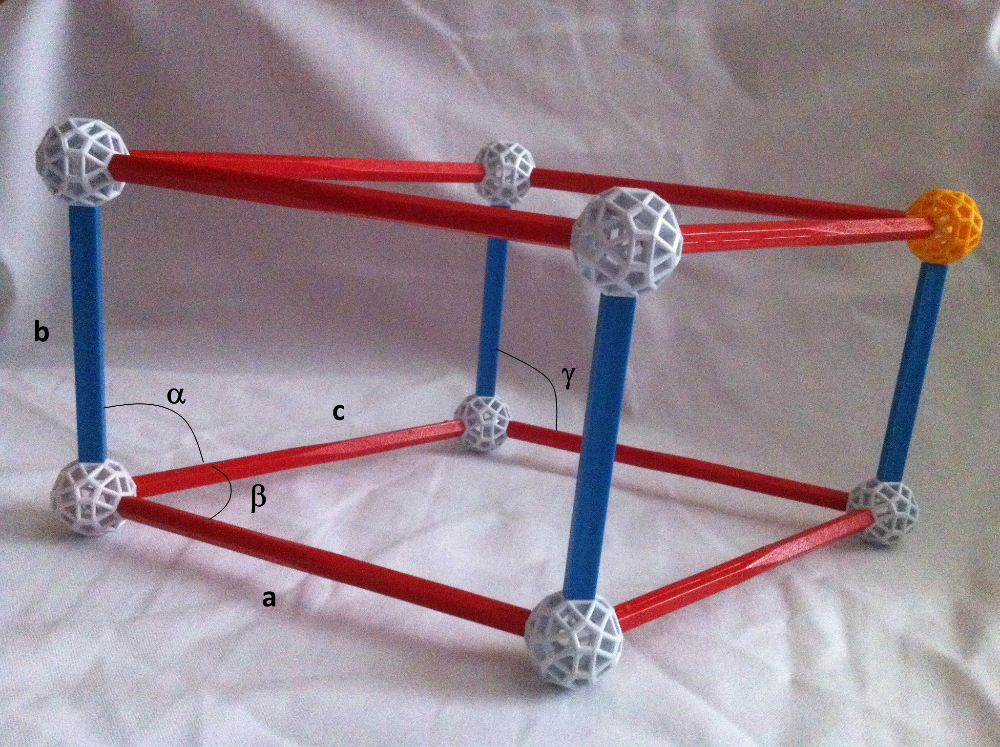The sides and angles of a crystal are indicated in the image above.
Cubic
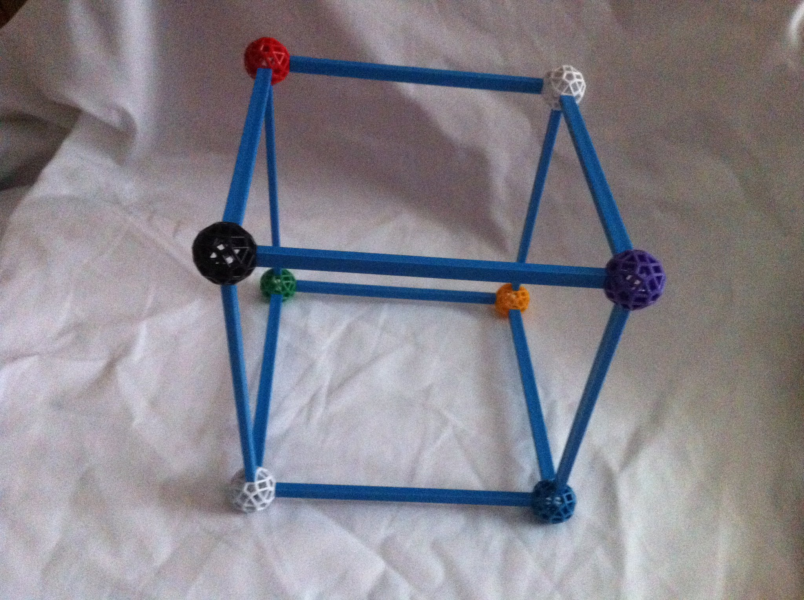 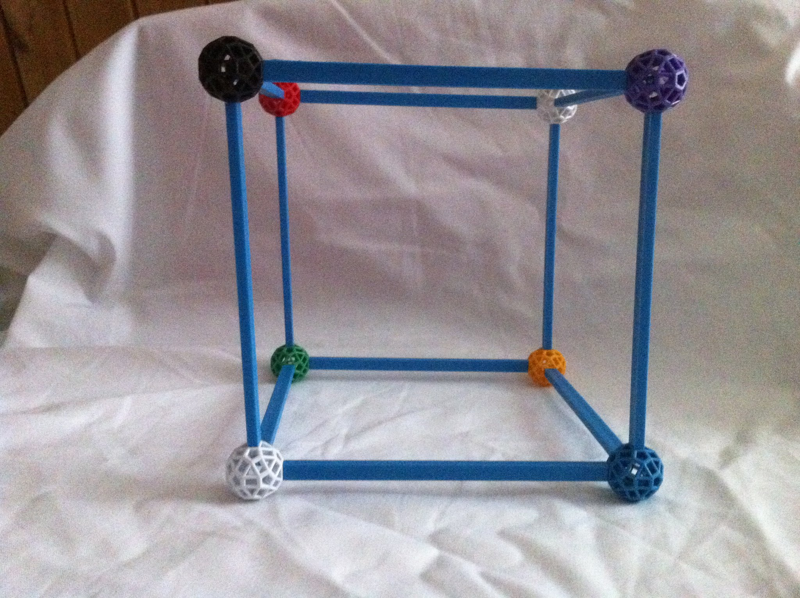 The cubic crystal system has the highest symmetry, with the following parameters:
a = b = c
α = β = γ = 90°Hexagonal
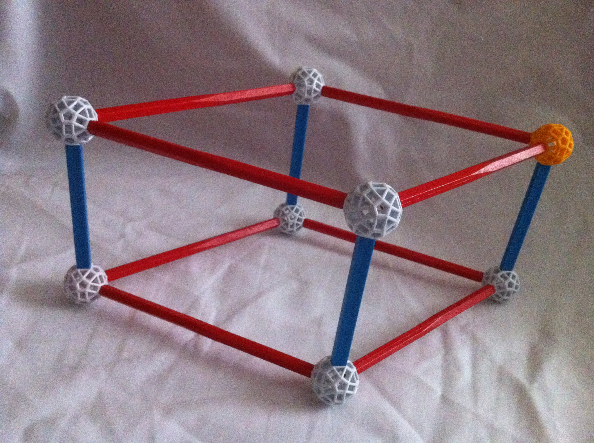 The hexagonal crystal system has the following parameters:
a = b ≠ c
α = β = 90°, γ = 120°Tetragonal
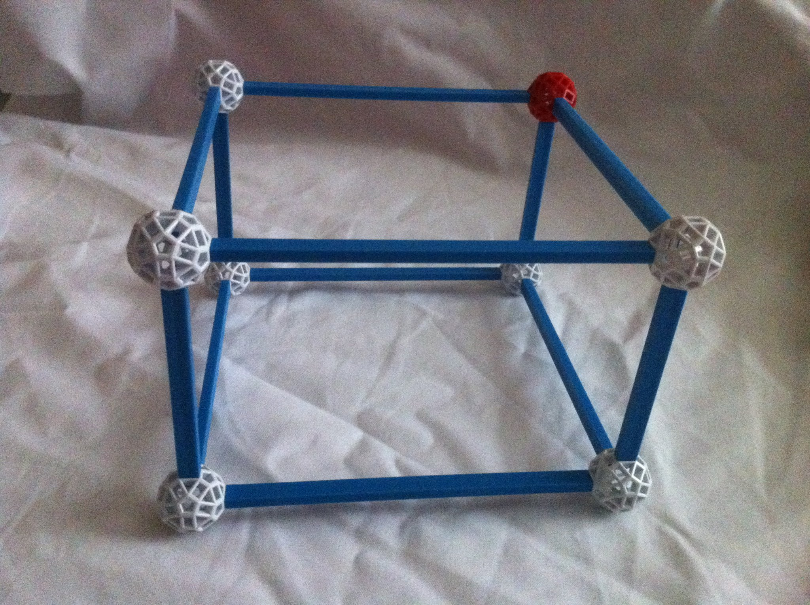 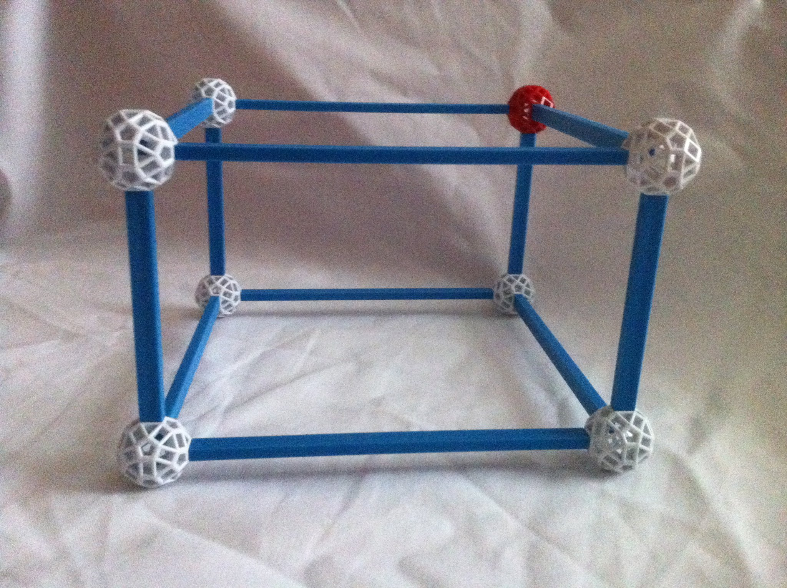 The tetragonal crystal system has the following parameters:
a = b ≠ c
α = β = γ = 90°Rhombohedral
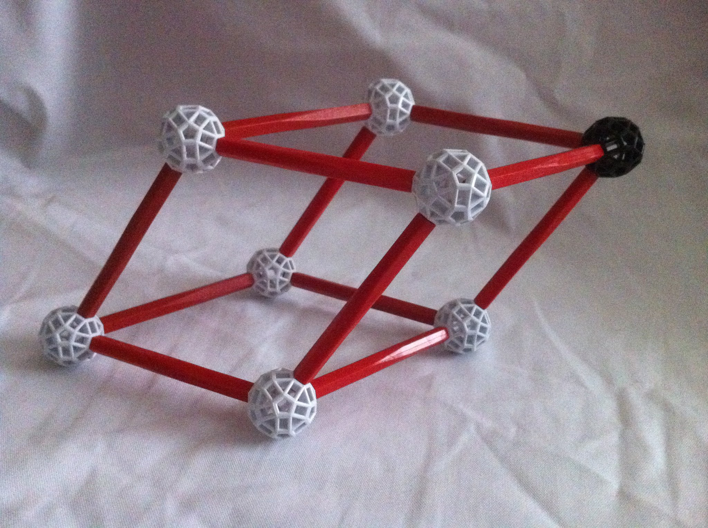 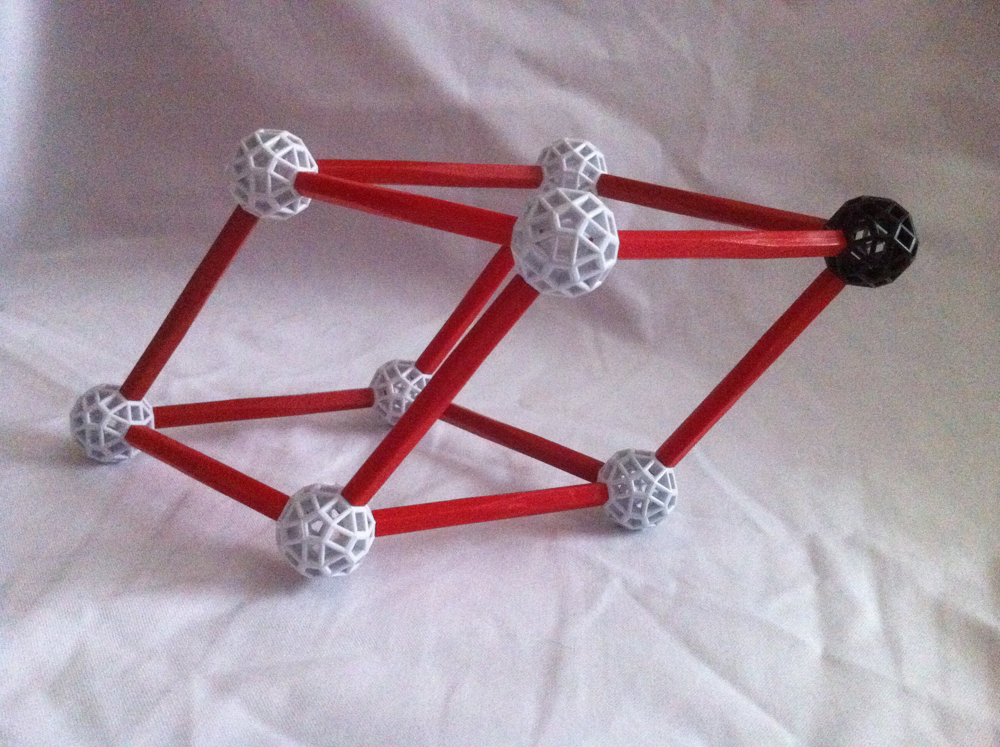 The rhombohedral crystal system has the following parameters:
a = b = c
α = β = γ ≠ 90°Orthorhombic
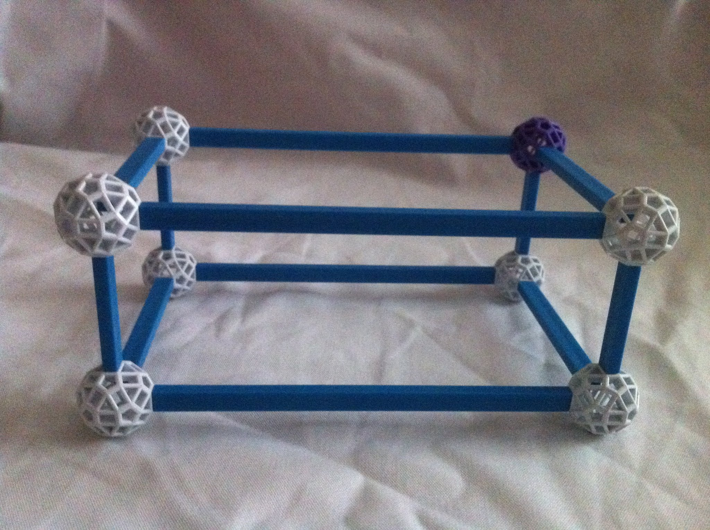 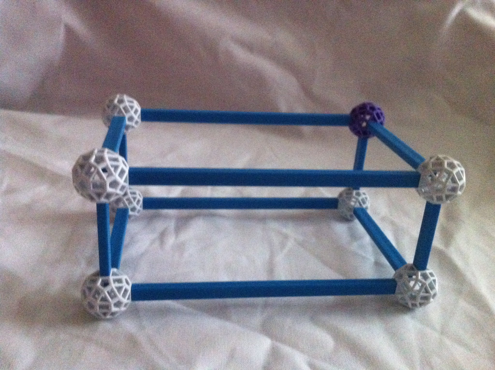 The orthorhombic crystal system has the following parameters:
a ≠ b ≠ c
α = β = γ = 90°Monoclinic
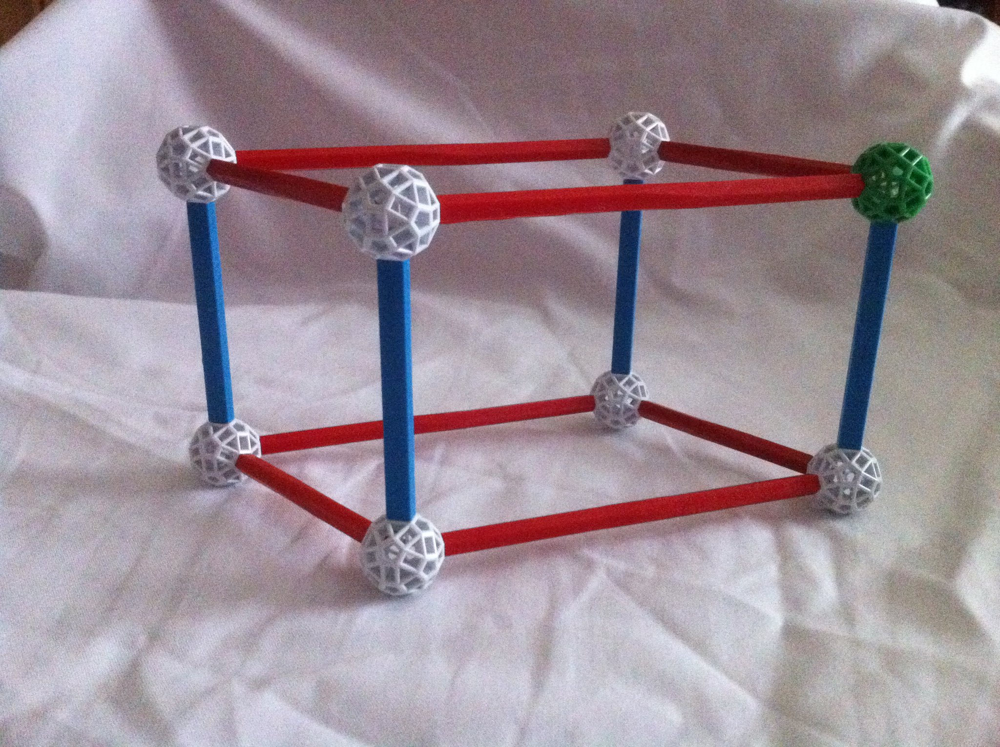 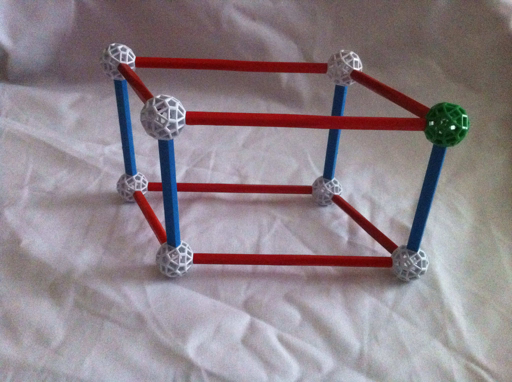 The monoclinic crystal system has the following parameters:
a ≠ b ≠ c
α = γ = 90°, β ≠ 90°Triclinic
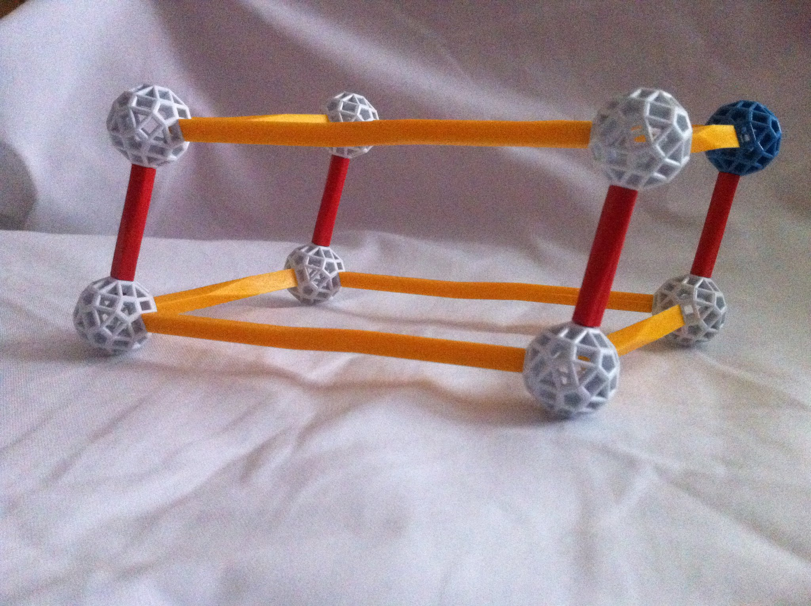 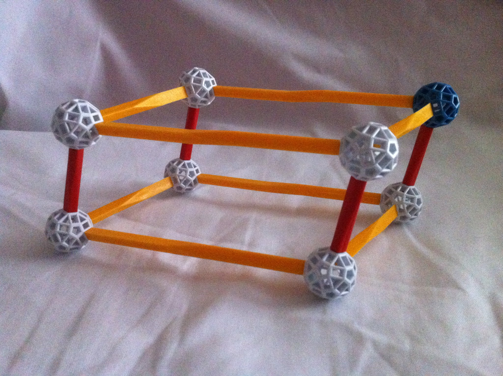 The triclinic crystal system has the following parameters:
a ≠ b ≠ c
α ≠ β ≠ γ